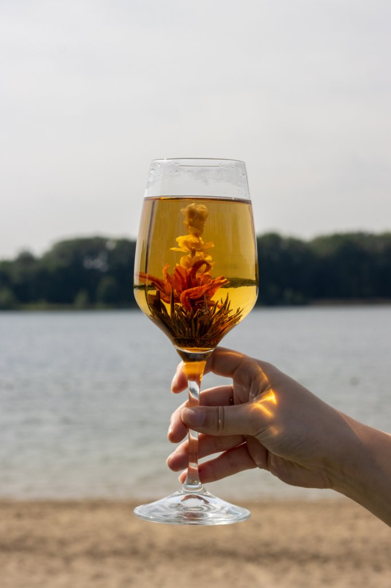
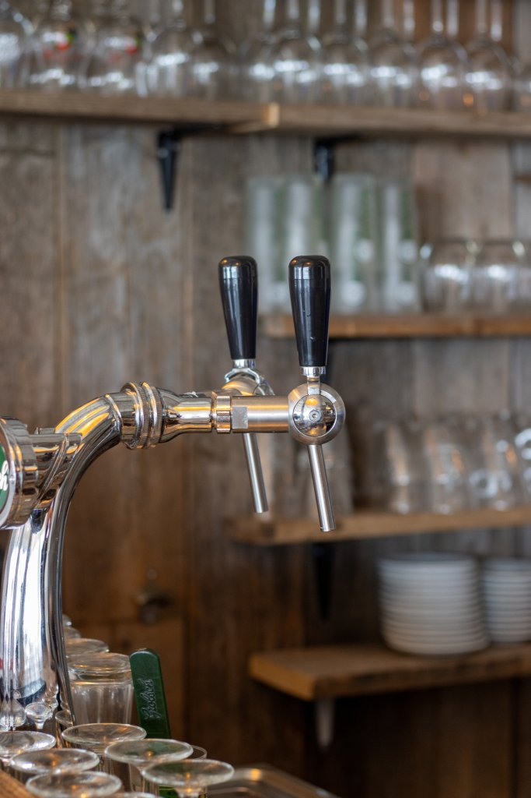
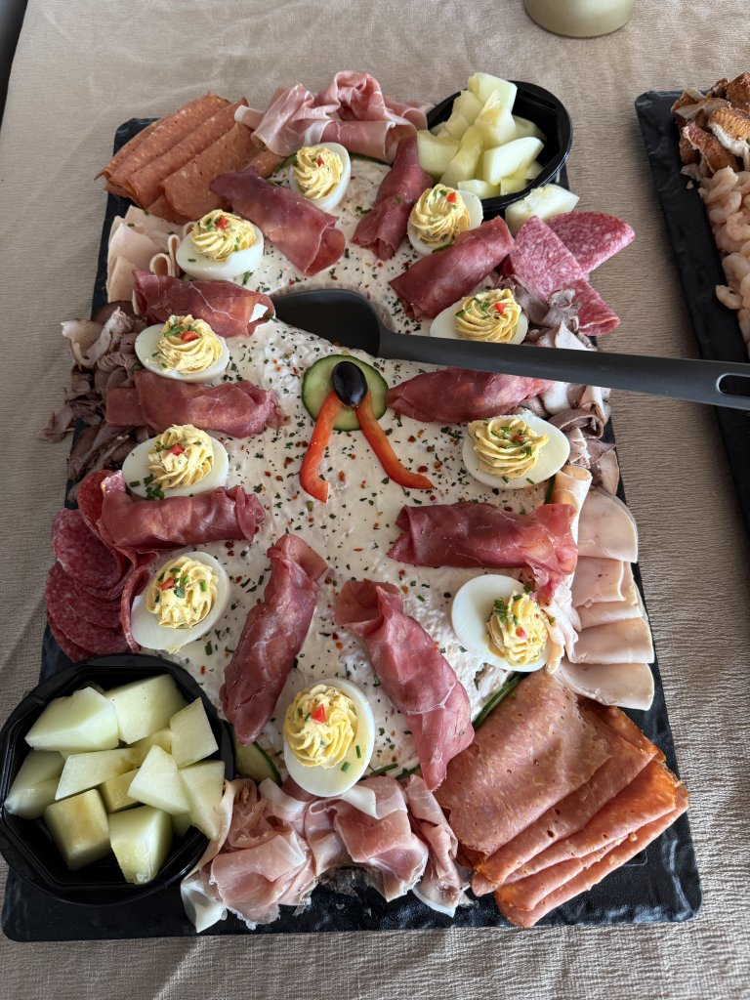
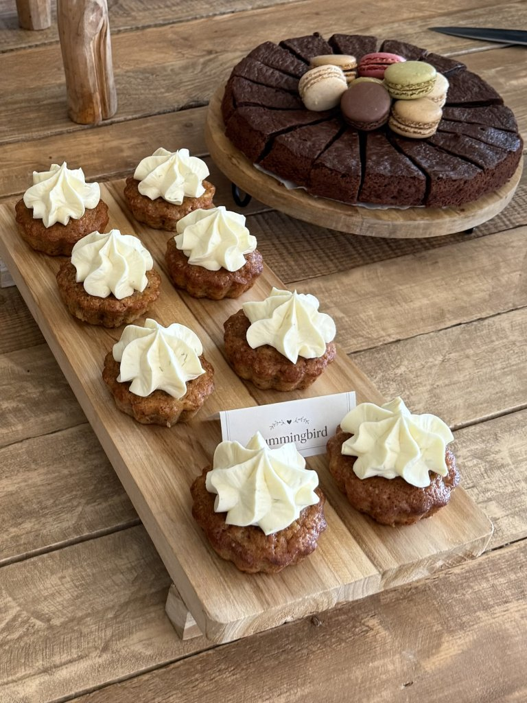
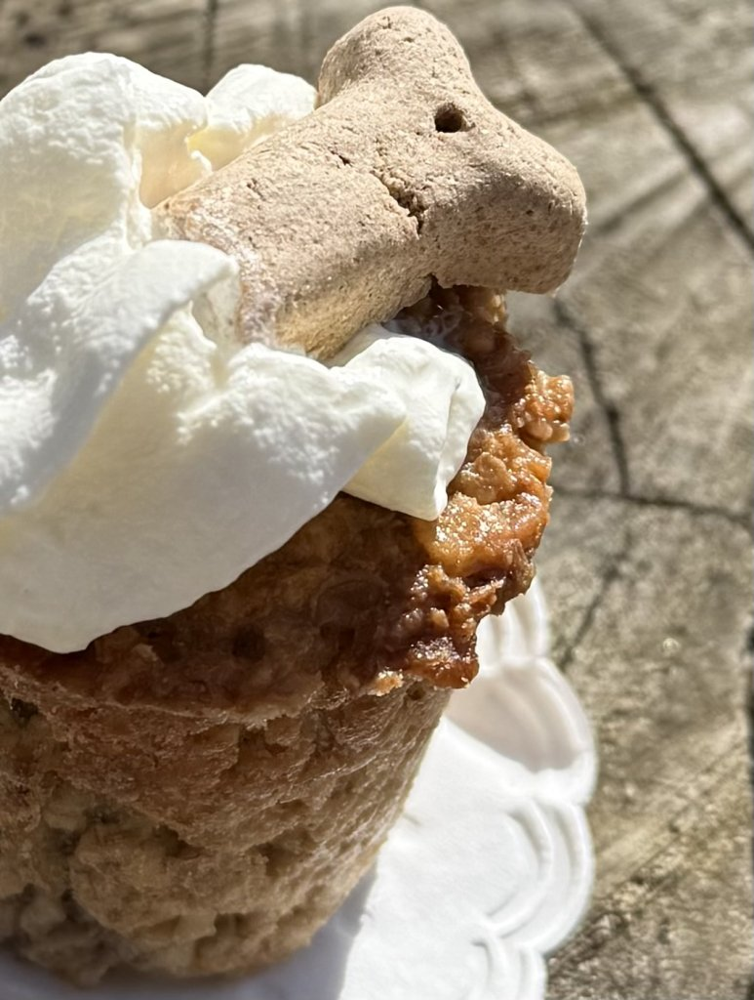
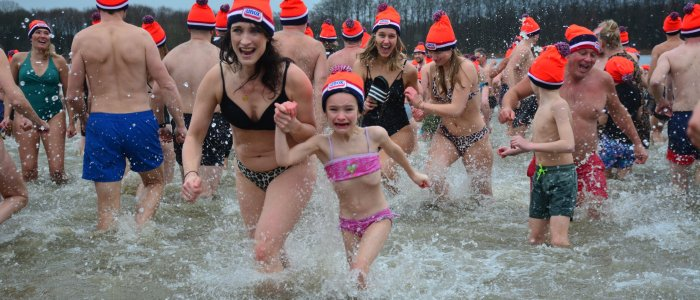
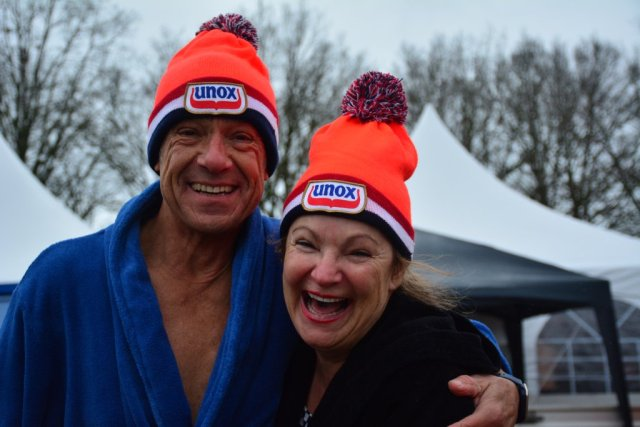
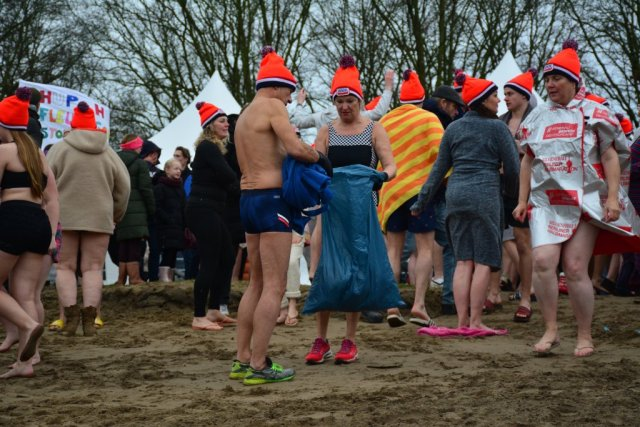
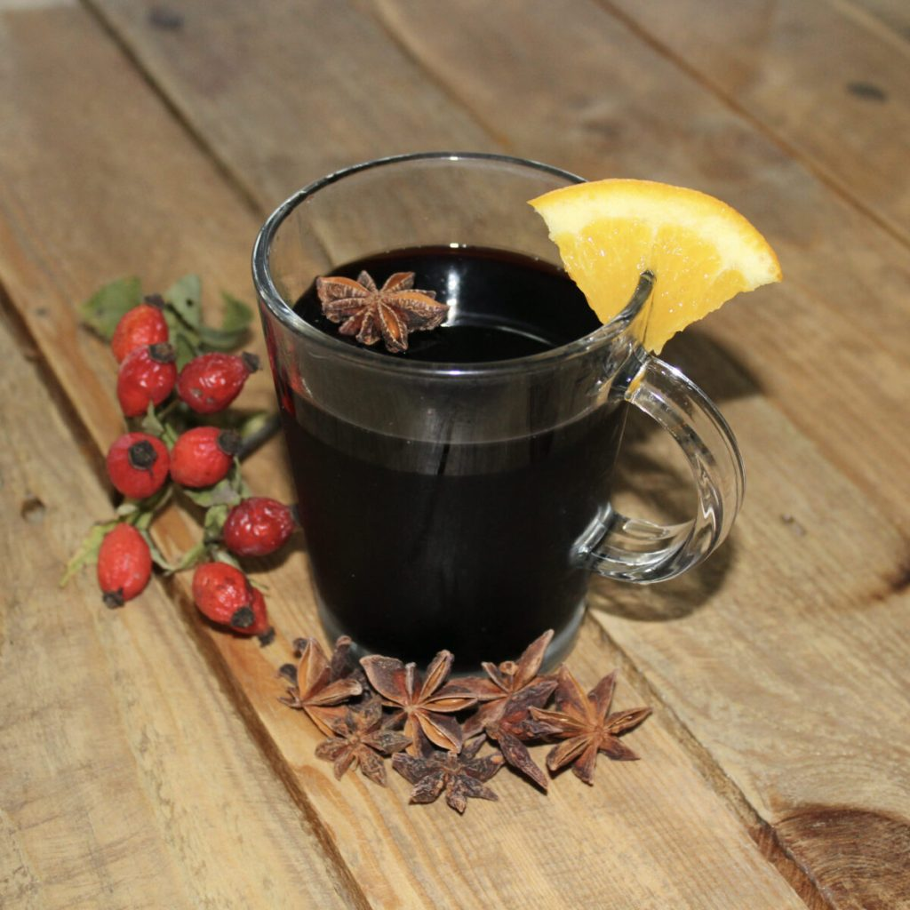

Woensdag t/m zondag open van 10:00 tot 16:00
Loungen, lunchen en borrelen met je voeten bijna in het zand.
Een ongedwongen strandtent aan het meer van Bussloo. Het hele jaar door, met uitzicht over het strand en het water.
Iedereen welkom, op blote voeten of in wandelschoenen
De plek waar je het gehele jaar heerlijk kunt loungen en lunchen, met uitkijk over het prachtige strand en water van Bussloo.
Badgasten, fietsers en wandelaars: schuif aan. Laidback en ongedwongen: dat is het Strandhuys van Frieda en Madelon.
- 70 plekken op het terras
- 60 plekken binnen in het restaurant
- Afhaalkiosk met picknickbanken
- Stretchtent en loungebanken met uitzicht


Openingstijden
| Maandag | gesloten |
|---|---|
| Dinsdag | gesloten |
| Woensdag | 10:00 – 16:00 |
| Donderdag | 10:00 – 16:00 |
| Vrijdag | 10:00 – 16:00 |
| Zaterdag | 10:00 – 16:00 |
| Zondag | 10:00 – 16:00 |
Op maandag en dinsdag zijn we ook op feestdagen gesloten. De tijden hangen af van de drukte en het weer; wijzigingen en besloten feesten melden we op onze Facebookpagina.
De kaart
Lunch tot 16:00. = vegetarisch. Vraag gerust naar de glutenvrije mogelijkheden.
Voor kinderen tot en met 12 jaar.
Koffie
Taart
Thee en meer
Van de tap
Uit het flesje
Wijn
Fris
Iets te vieren aan het water?
Verjaardag, bruiloft, bedrijfsuitje, babyshower, vrijgezellendag, jubileum of sportdag: vier het bij ons aan het strand.
Vanaf 50 personen heb je het Strandhuys helemaal voor jezelf. Muziek, aankleding, hapjes en een buffet regelen we samen met jou.

Arrangementen
Overdag vanaf 25 personen, 's avonds vanaf 50. Een besloten feest is vanaf 50 personen. Selfservice: de drankjes haal je aan de bar.
Inclusief koffie, thee, Grolsch van de tap, wijn, frisdrank en binnenlands gedistilleerd, plus twee warme rondes bitterballen en bittergarnituur.
Na afloop
Buffetten en BBQ op aanvraag. Ook groepsactiviteiten zoals archery tag, boogschieten of een pubquiz zijn te combineren met een BBQ of buffet: vraag ernaar.
Vraag je feest aan
Babyshower met high tea
28,95 per persoon, voor 8 tot 18 personen
Een versierde tafel in roze of blauw, een alcoholvrij welkomstdrankje en theebloemen. En dan het lekkers:
Fijn om te weten: confetti is niet toegestaan.
Reserveer een high teaHondenseizoen: 1 oktober t/m 1 mei
Je hond mag mee naar binnen
In het hondenseizoen zijn aangelijnde honden welkom, binnen en op het terras. Voor de hond is er een homemade cupcake en een eigen canine menu met kauwsnacks van buffel, zwijn of konijn.
Liever verder wandelen? Neem je koffie of thee mee: we hebben ook to go.

Nieuwjaarsduik 2027
Vrijdag 1 januari 2027duik om 14:00
Begin het jaar met een frisse duik in het meer van Bussloo. Om 13:45 is er een warming-up door TofEvents, omkleden kan in de tent en EHBO is aanwezig.
Na afloop: erwtensoep, een Unox-muts en twee munten voor glühwein, warme chocomel, koffie of thee.
Inschrijven gaat online, voor 7,50 per kaartje. Lukt het niet? Mail dan naar info@strandhuysenk.nl.



Nieuwjaarsduik 2026, foto's Marc Roerdink
Het hele jaar iets te beleven
- Ibizamarkt
- Nieuwjaarsduik
- Rondje Bussloo

Kom langs aan het strand
Strandhuys de EnkKneuterstraat 19
7384 CM Wilp
recreatiegebied Bussloo
06-81446614
info@strandhuysenk.nl
Reserveren doe je door te bellen of te mailen.
Parkeren kan bij de slagboom van Leisurelands. Vraag bij ons naar de voordelige uitrijkaart. Kom je met de auto over de A1? Er is een carpoolplaats bij de afrit Twello/Wilp.
Plan je route